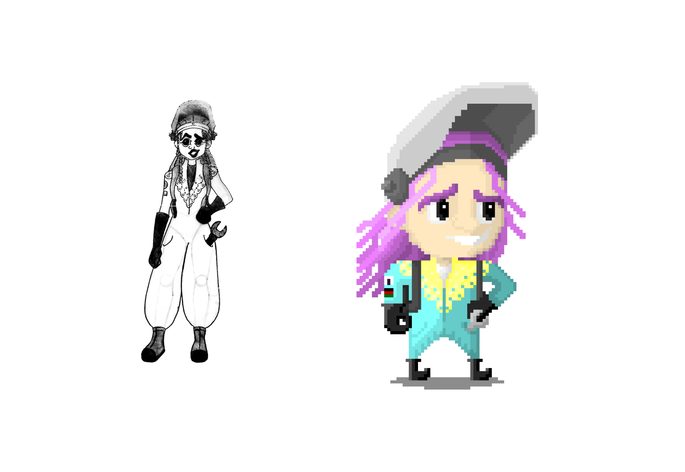
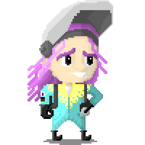
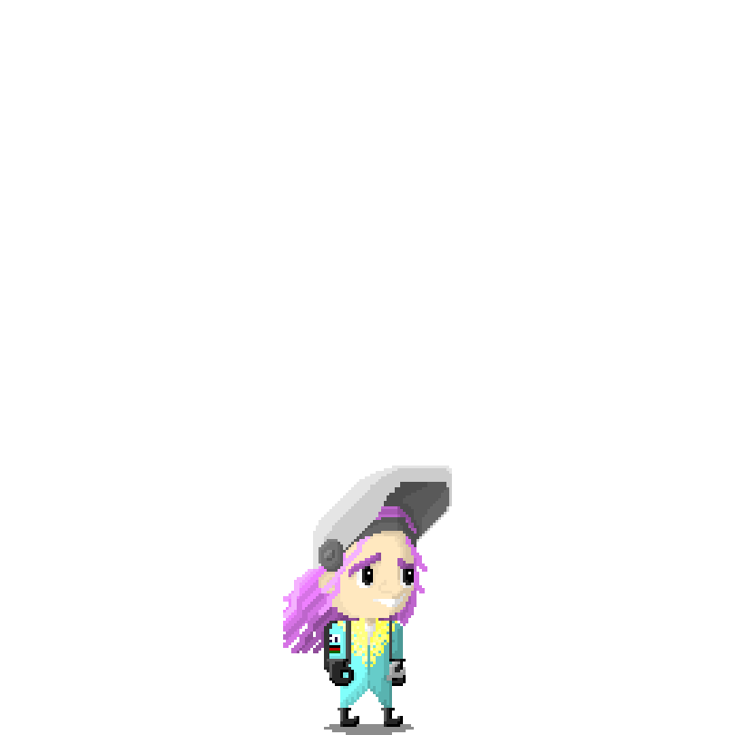
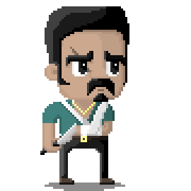
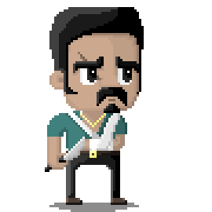
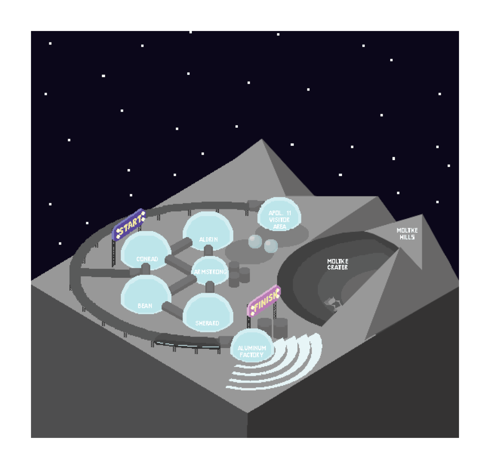

Story of this digital game concept design is inspired by the novel Artemis by Andy Weir.
The work is inspired from Andy Weir's novel, Artemis. The novel presents, a city called Artemis, which is established on the Moon and a young lady, Jasmine Bashara who lives there. Andy Weir tackles how a city on the Moon functions economically and politically while analysing the relationship between the city and the Arabic girl in her twenties.
Jazz Bashara is a smart, funny and capable woman who lives in Artemis. She is the protagonist of the game. Her aim is to defeat the obstacles by welding, jumping, running and collect enough yings (tokens)to save Artemis.
Jazz Bashara, immigrates to Artemis with her father when she was at a small age. Her father is one of the best welders in Artemis and he has a high sense of morality and follows the rules and laws. However, Jazz is rebellious and always breaks the rules. Jazz's biggest aim is to collect 416,000 ying and renew his fathers welding place, which she burned by mistake, several years ago. Because she and her father don't talk since the incident, she lives alone in a capsule house and has a job with low income. She earns extra money by bringing illegal goods into the city. the events start to emerge when Trond Landvick (one of the customers whom Jazz brings illegal goods to), asks Jazz a favor and offers her a lot of money. Her illegal mission is to sabotage Sanchez Aluminum Factory by destroying their harvesting machines which collect anortite in order to produce aluminum and provide oxygen to the city. Jazz is also good at welding. Throughout the game she will progress by running, jumping and welding.
   Marcelo Álvarez, is a mafia member from Brazil, and his mission is to stop Jazz. He is the main antagonist of the game.
As the story progresses, Jazz finds out that Sanchez Aluminum Factory belongs to Brezilian mafia. Therefore she opposes the mafia once she starts the sabotage plan. The mafia sends Alvarez, who is a member, to kill Landvick and Jazz. Alvarez breaks his right arm during the fight with Landvick but as he is left-handed he can still fight. He is almost unstoppable and survives from every incident. This character will chase Jazz throughout the game.
 

The digital game map includes every area and place where the events in the novel take place. The player will be able to visit this map in order to understand where they are. The game will progress as follows: The game will initiate in Conrad Bubble where Jazz's house is. In this level player will collect money. Secondly, player will be forwarded to Apollo 11 Visitor Area and will hide from the EVA Guild while collecting more money. On the next level, player will arrive to Moltke Crater and will destroy the harvesting machines. As the game progresses, player will return to Conrad Bubble and will face Alvarez. In the upcoming levels the player should avoid Alvarez. On the final level player will visit Sanchez Aluminum Factory and should collect enough money before Alvarez catches them.
 The level design of Conrad Bubble, is designed to look messy and chaotic. According to the novel this bubble is where all the working class lives. And the settlement is not planned. The player will be able to view the whole level before-hand and as they play they will zoom in to the character. The doors will enable the player to hide while the other assets will provide gain of temporary skills such as running faster or jumping higher.
